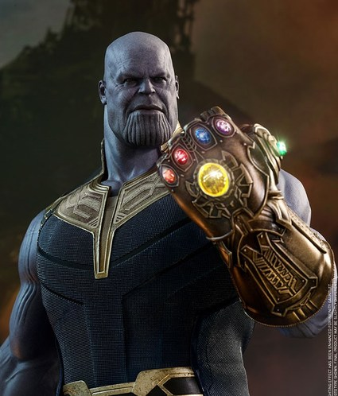

MARVEL

Iron Man is a 2008 American superhero film based on the Marvel Comics character of the same name. The first installment of the Marvel Cinematic Universe, it was directed by Jon Favreau from a screenplay by Mark Fergus and Hawk Ostby, and Art Marcum and Matt Holloway. The film follows Tony Stark (Robert Downey Jr.), an industrialist and master engineer who builds a powered exoskeleton after a life-threatening incident, and becomes the technologically advanced superhero Iron Man. The film had been in development since 1990 at Universal Pictures, 20th Century Fox, and New Line Cinema at various times, before Marvel Studios reacquired the rights in 2006. Marvel put the project in production as its first self-financed film, with Paramount Pictures as distributor. Favreau signed on as director, aiming for a naturalistic feel, and chose to shoot the film primarily in California, rejecting the East Coast setting of the comics to differentiate the film from numerous superhero films set in New York City-esque environments. Filming began in March 2007 and concluded in June. During filming, the actors were free to create their own dialogue because pre-production was focused on the story and action. Rubber and metal versions of the armors, created by Stan Winston's company, were mixed with computer-generated imagery to create the title character.Iron Man premiered in Sydney on April 14, 2008, and was released in the United States on May 2, 2008. The film grossed over $585 million on its $140 mi llion budget, becoming the eighth-highest grossing film of 2008. It received praise from critics for its acting (particularly Downey's), screenplay, direction, visual effects, and action sequences, and was selected by the American Film Institute as one of the ten best films of 2008. It received two nominations at the 81st Academy Awards for Best Sound Editing and Best Visual Effects, and was followed by the sequels Iron Man 2 and Iron Man 3 in 2010 and 2013, respectively. This also marks the beginning of the collection of 22 films which are known as The Infinity Saga, which concluded in 2019 with Avengers: Endgame.
Captain America is a fictional superhero appearing in American comic books published by Marvel Comics. Created by cartoonists Joe Simon and Jack Kirby, the character first appeared in Captain America Comics #1 (cover dated March 1941) from Timely Comics, a predecessor of Marvel Comics. Captain America was designed as a patriotic supersoldier who often fought the Axis powers of World War II and was Timely Comics' most popular character during the wartime period. The popularity of superheroes waned following the war and the Captain America comic book was discontinued in 1950, with a short-lived revival in 1953. Since Marvel Comics revived the character in 1964, Captain America has remained in publication.

Thor is the son of Odin, but there was a time when Thor proved reckless to the point of disobeying orders by Odin not to wage war. His penance was to live as a disabled mortal, deprived of his godly powers and even the memory of having been a god. Instead, those powers were transferred into his hammer and an enchantment was cast on it to govern what would happen should he ever find the hammer's hiding place, and also to disguise it as an ordinary walking stick. It was then hidden in a cave.

Spider-Man is a fictional superhero created by writer-editor Stan Lee and writer-artist Steve Ditko. He first appeared in the anthology comic book Amazing Fantasy #15 (August 1962) in the Silver Age of Comic Books. He appears in American comic books published by Marvel Comics, as well as in a number of movies, television shows, and video game adaptations set in the Marvel Universe. In the stories, Spider-Man is the alias of Peter Parker, an orphan raised by his Aunt May and Uncle Ben in New York City after his parents Richard and Mary Parker were killed in a plane crash. Lee and Ditko had the character deal with the struggles of adolescence and financial issues, and accompanied him with many supporting characters, such as J. Jonah Jameson, Flash Thompson, Harry Osborn, romantic interests Gwen Stacy and Mary Jane Watson, and foes such as Doctor Octopus, Green Goblin and Venom. His origin story has him acquiring spider-related abilities after a bite from a radioactive spider; these include clinging to surfaces, shooting spider-webs from wrist-mounted devices, and detecting danger with his "spider-sense".